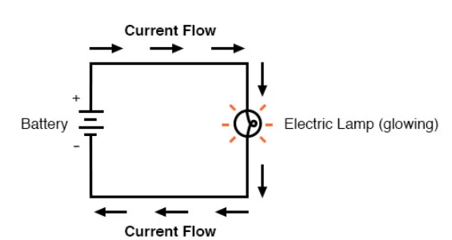

What makes a light bulb light up?
Light bulbs consist of only a few basic parts. The metal base has two metal contacts that connect to the ends of an electrical circuit. The metal contacts attach to two stiff wires, which themselves are connected by a thin metal filament. The filament is the thin wire you see in the middle of the light bulb, held up by a glass mount. All of this exists within a glass bulb filled with an inert gas, such as argon.
An electric circuit is formed when a conductive path is created to allow electric charge to continuously move. This continuous movement of electric charge through the conductors of a circuit is called a current, and it is often referred to in terms of “flow,” just like the flow of a liquid through a hollow pipe.

The Ohm's Law Equation
Ohm’s principal discovery was that the amount of electric current through a metal conductor in a circuit is directly proportional to the voltage impressed across it, for any given temperature. Ohm expressed his discovery in the form of a simple equation, describing how voltage, current, and resistance interrelate: voltage (E) is equal to current (I) multiplied by resistance (R).
Calculate the amount of current (I) in a circuit, given values of voltage (E) and resistance (R): I = E/R

Enter Resistance(R):
Source: https://www.wonderopolis.org/wonder/what-makes-a-light-bulb-light-up
https://www.allaboutcircuits.com/textbook/direct-current/chpt-2/voltage-current-resistance-relate/